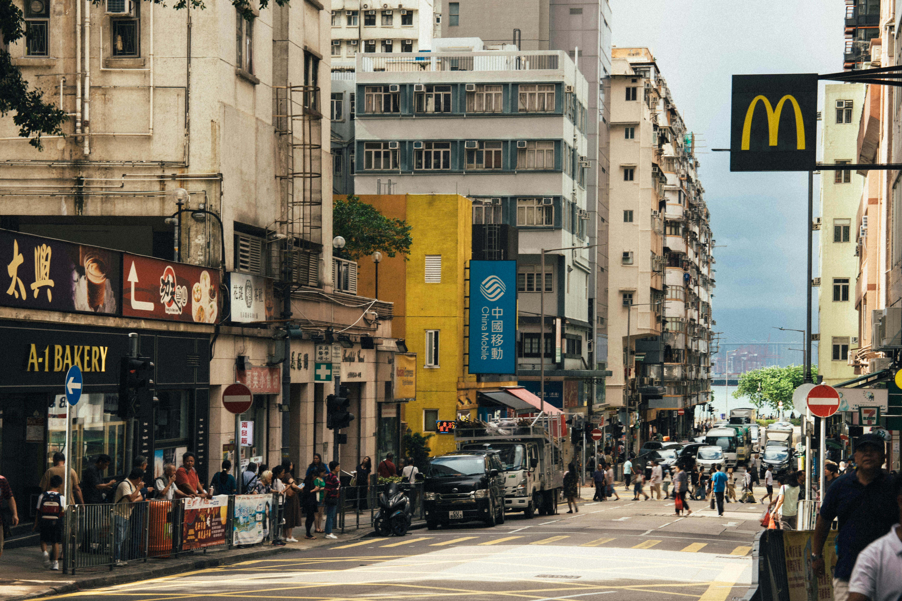

Abstract
This call introduces the inaugural issue of Everyday Life: International Journal of Public Culture, Art and Design, titled Everyday Life Research Across Disciplines. The issue invites academic, artistic, curatorial and practice-based contributions that examine how everyday life is understood, represented, researched and practised across different disciplines and cultural contexts. Rather than treating everyday life as a fixed academic object, the call approaches it as a critical field shaped by ordinary environments, public culture, media systems, spatial practices, infrastructures, design, artistic production and lived experience. It welcomes work that reflects on the methods, perspectives and political conditions through which everyday life becomes visible, contested and reimagined today.
Keywords
Subject: Everyday Life Research Across Disciplines
Everyday Life is a newly established independent open-access journal dedicated to public culture, urban space, art, design, and the politics of everyday life. We are currently seeking contributions for the journal’s inaugural issue, Everyday Life Research Across Disciplines. All submissions undergo editorial and peer review. Everyday Life is a fully open-access independent journal with no submission or publication fees.
This inaugural issue aims to explore how everyday life is understood, researched, interpreted, represented, and practiced across different disciplines, fields, and forms of cultural production today.
Rather than treating everyday life as a fixed academic object, this issue asks how different researchers, artists, designers, architects, curators, filmmakers, and practitioners approach it through distinct intellectual, methodological, visual, spatial, and political perspectives. For us, whether a study becomes a study of everyday life only depends on the perspective, method, and interpretation through which the world is approached. Any object, environment, practice, image, infrastructure, or event may become part of everyday life research, while every ordinary condition also contains its own exceptional, historical, or even “epic” moments.

figure-1.jpg to display it here.We therefore welcome contributions that reflect on how everyday life research has evolved within particular disciplinary traditions, why it remains important today, and how contemporary social, spatial, technological, cultural, and political conditions demand renewed ways of studying and engaging the everyday. Everyday life research, in this sense, exists within dialectical relations between ordinary and extraordinary, repetition and rupture, background and event, structure and lived experience, and is produced through situated forms of reading, interpretation, and critical attention.
Questions
The issue seeks to create dialogue across different approaches to everyday life research and practice. We encourage contributions engaging with questions such as:
- Why does everyday life matter today?
- How has everyday life been studied within your field?
- What methods do you use to research everyday life?
- How are contemporary everyday environments being transformed through media, platforms, infrastructures, design, urban governance, and public culture?
- How can artistic, curatorial, spatial, or practice-based approaches contribute to everyday life research?
- What new problems, conditions, or possibilities emerge in studying everyday life today?
Fields
We welcome interdisciplinary and experimental contributions from fields including, but not limited to:
- design studies
- urban studies
- architecture
- visual culture
- media studies
- cultural studies
- anthropology
- sociology
- human geography
- art and curatorial practice
- film and moving image research
- public art and socially engaged practice
- digital culture and platform studies
- infrastructure studies
- everyday aesthetics and material culture
Types of Contributions
Research Article Peer-reviewed
Research articles should critically engage with the history, methods, theories, or contemporary conditions of everyday life research within a particular field or interdisciplinary context.
- Maximum 5,500 words, excluding references.
- Harvard referencing required.
- Submissions must be provided as anonymised Word documents, .doc or .docx.
Review / Practice-Based Article Editorial team-reviewed
Including exhibition reviews, artist projects, visual essays, photo essays, curatorial reflections, practice-based research, visual documentation and short experimental texts.
- Typically 1,500–2,500 words, maximum 3,000 words, excluding citations and footnotes.
- At least 3 images where appropriate.
- Please provide captions and image credits.
Submission Information
Please include:
- title
- abstract or short project description, 150 words
- 5–7 keywords
- short author bio, max 100 words
All submissions undergo free editorial and peer review. Please consult the full Submission Guidelines before submitting: https://everydaylifejournal.uk/submission-guideline
Deadline
1 July 2026
Recommended citation
The Editorial Team (2026) ‘Call for Papers: Inaugural Issue (Issue 01): Everyday Life Research Across Disciplines’, Everyday Life: International Journal of Public Culture, Art and Design, 1(1), pp. 1–5.
Article URL: https://streetstudygroup-ui.github.io/Articles/articles/test-article/
Contact
Editorial Team
streetstudygroup@gmail.com
© 2026 The Author(s). Published by Everyday Life: International Journal of Public Culture, Art and Design. This is an open-access article distributed under the terms of the Creative Commons Attribution-NonCommercial 4.0 International Licence (CC BY-NC 4.0), which permits non-commercial use, distribution and reproduction in any medium, provided the original work is properly cited. Everyday Life is an independent open-access journal with no submission or publication fees.